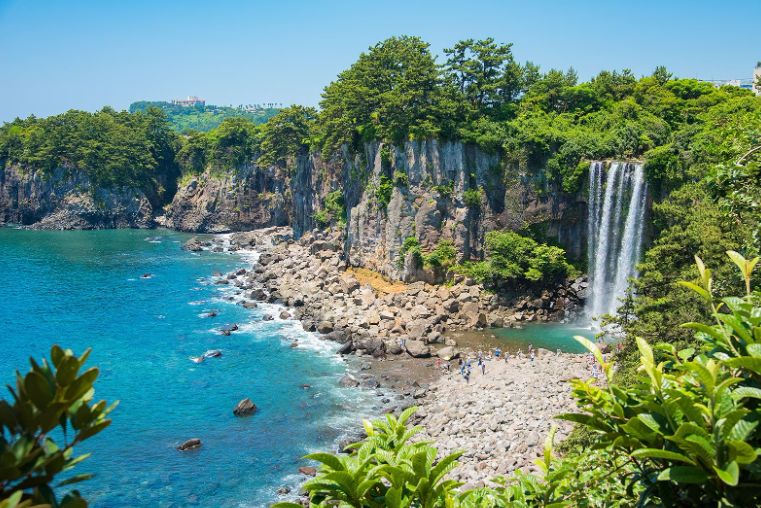
제주도
바다와 오름, 카페와 해안 드라이브를 한 번에 즐길 수 있는 대표 여행지입니다.
테마별 추천 여행지
힐링, 액티비티, 쇼핑, 관광 탭에서 취향에 맞는 여행지를 바로 둘러보고 마음에 드는 장소를 저장해보세요.
RECOMMENDS

바다와 오름, 카페와 해안 드라이브를 한 번에 즐길 수 있는 대표 여행지입니다.
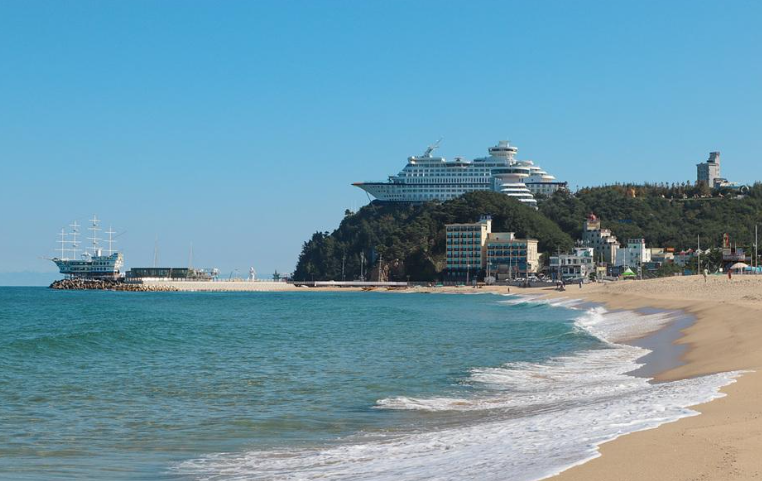
안목해변과 경포호, 커피 거리가 가까워 짧은 일정에도 여유로운 코스를 만들기 좋습니다.
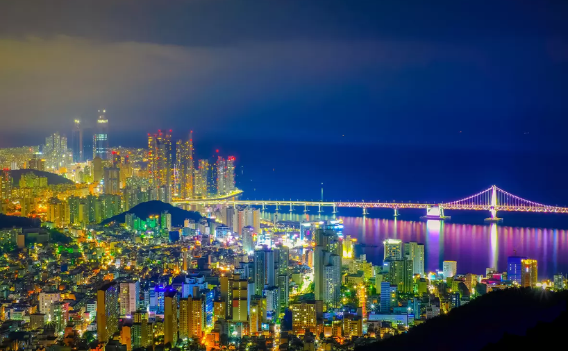
도시 쇼핑과 바다, 야경, 먹거리를 한 번에 연결하기 쉬운 여행지입니다.
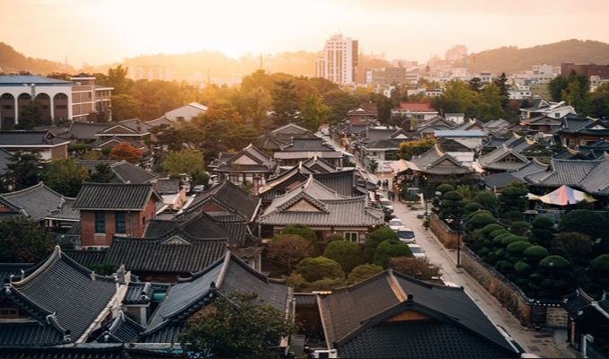
한옥마을과 전통 먹거리 동선이 가까워 문화 관광과 맛집 여행을 함께 즐기기 좋습니다.
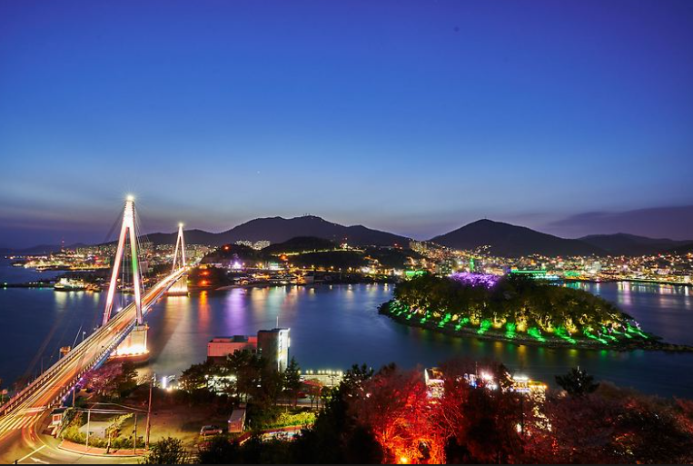
밤바다와 야경이 강점이라 커플 여행이나 조용한 휴식 여행에 잘 맞습니다.
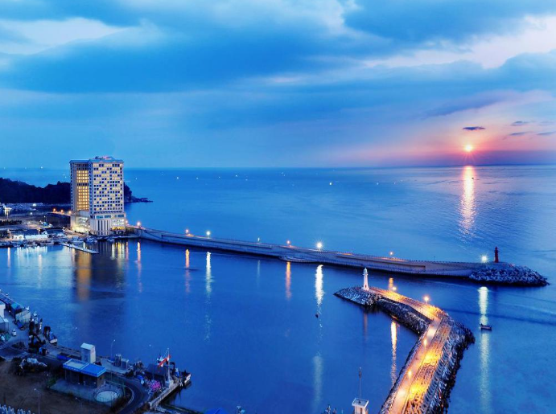
설악산과 동해 바다를 하루 안에 모두 볼 수 있어 움직임이 많은 여행에 적합합니다.
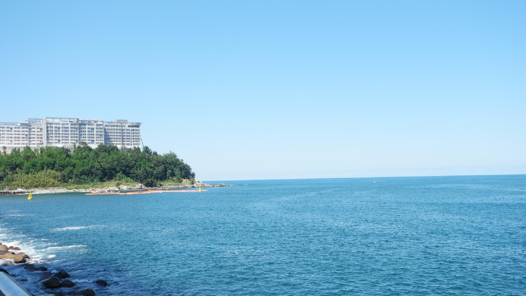
서핑과 바다 산책, 감성 카페를 짧은 일정에 묶기 좋아 친구 여행에 잘 어울립니다.
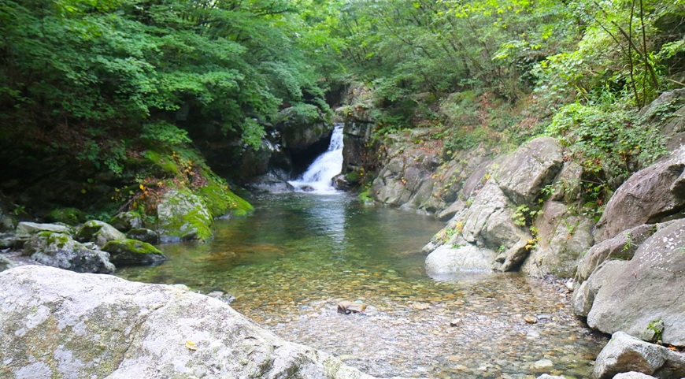
서울 근교에서 자연 산책과 수목원, 섬 여행을 가볍게 즐기기 좋습니다.
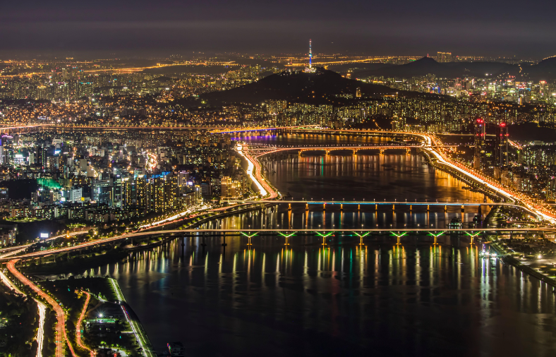
쇼핑, 전시, 맛집, 고궁 산책까지 선택지가 많아 취향별 일정 구성이 쉽습니다.
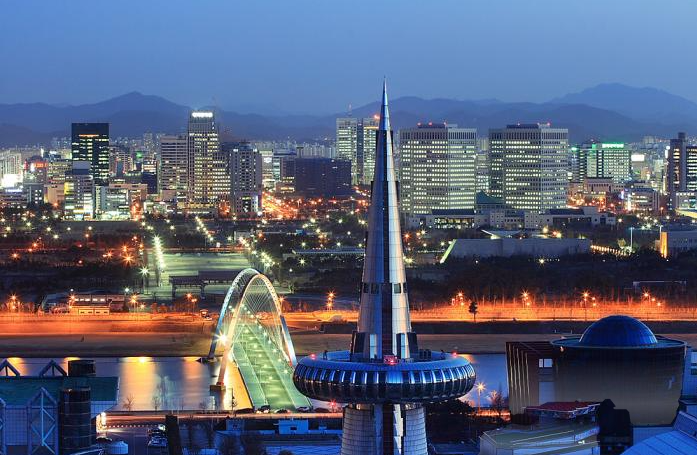
교통 접근성이 좋고 빵집, 수목원, 과학공원 코스를 편하게 묶을 수 있습니다.
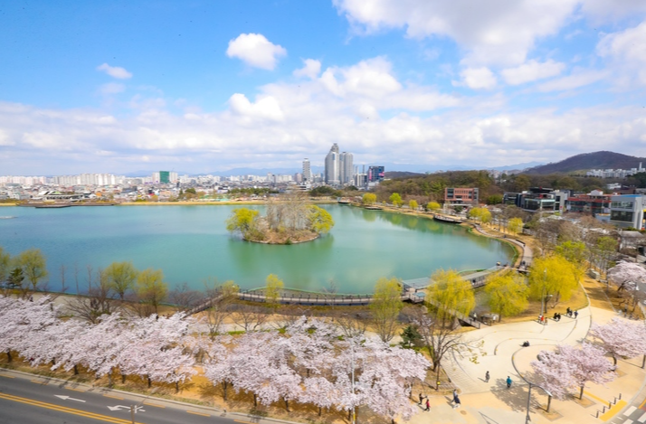
동성로와 서문시장, 로컬 먹거리를 중심으로 가볍게 쇼핑 코스를 만들기 좋습니다.
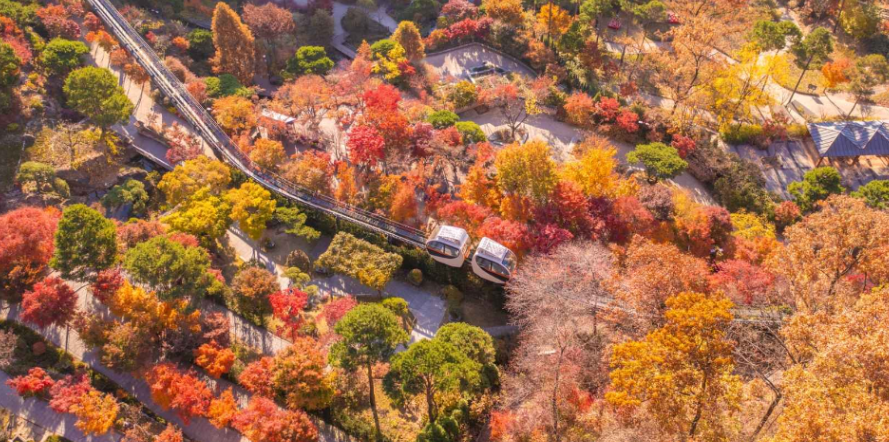
문화 예술 공간과 지역 맛집, 무등산 자연 코스를 취향에 맞게 조합할 수 있습니다.
바다와 오름, 카페와 해안 드라이브를 한 번에 즐길 수 있는 대표 힐링 여행지입니다.
안목해변과 경포호, 커피 거리가 가까워 짧은 일정에도 여유로운 코스를 만들기 좋습니다.
밤바다와 야경이 강점이라 커플 여행이나 조용한 휴식 여행에 잘 맞습니다.
서울 근교에서 자연 산책과 수목원, 섬 여행을 가볍게 즐기기 좋습니다.
서핑과 바다 산책, 감성 카페를 짧은 일정에 묶기 좋아 친구 여행에 잘 어울립니다.
해안 드라이브와 오름, 섬 코스를 함께 즐길 수 있어 활동적인 여행에도 좋습니다.
설악산과 동해 바다를 하루 안에 모두 볼 수 있어 움직임이 많은 여행에 적합합니다.
수상 레저와 산책 코스를 함께 넣기 좋아 근교 액티비티 코스로 인기가 많습니다.
쇼핑, 전시, 맛집, 고궁 산책까지 선택지가 많아 취향별 일정 구성이 쉽습니다.
도시 쇼핑과 바다, 야경, 먹거리를 한 번에 연결하기 쉬운 여행지입니다.
동성로와 서문시장, 로컬 먹거리를 중심으로 가볍게 쇼핑 코스를 만들기 좋습니다.
한옥마을과 전통 먹거리 동선이 가까워 문화 관광과 맛집 여행을 함께 즐기기 좋습니다.
문화 예술 공간과 지역 맛집, 무등산 자연 코스를 취향에 맞게 조합할 수 있습니다.
교통 접근성이 좋고 빵집, 수목원, 과학공원 코스를 편하게 묶을 수 있습니다.
궁궐과 전시, 전망 명소가 많아 짧은 관광 일정에도 볼거리가 풍부합니다.
Saved Places
Member
Join
Transport Booking
Stay Booking
Cart